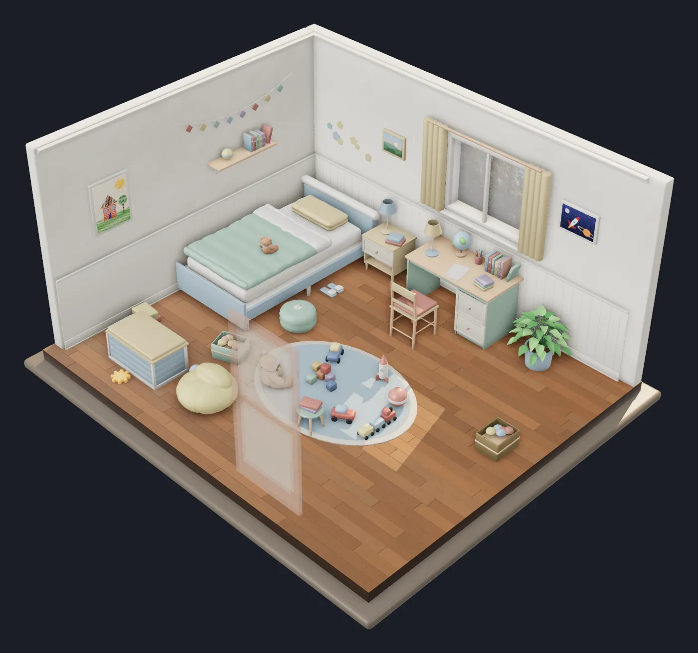
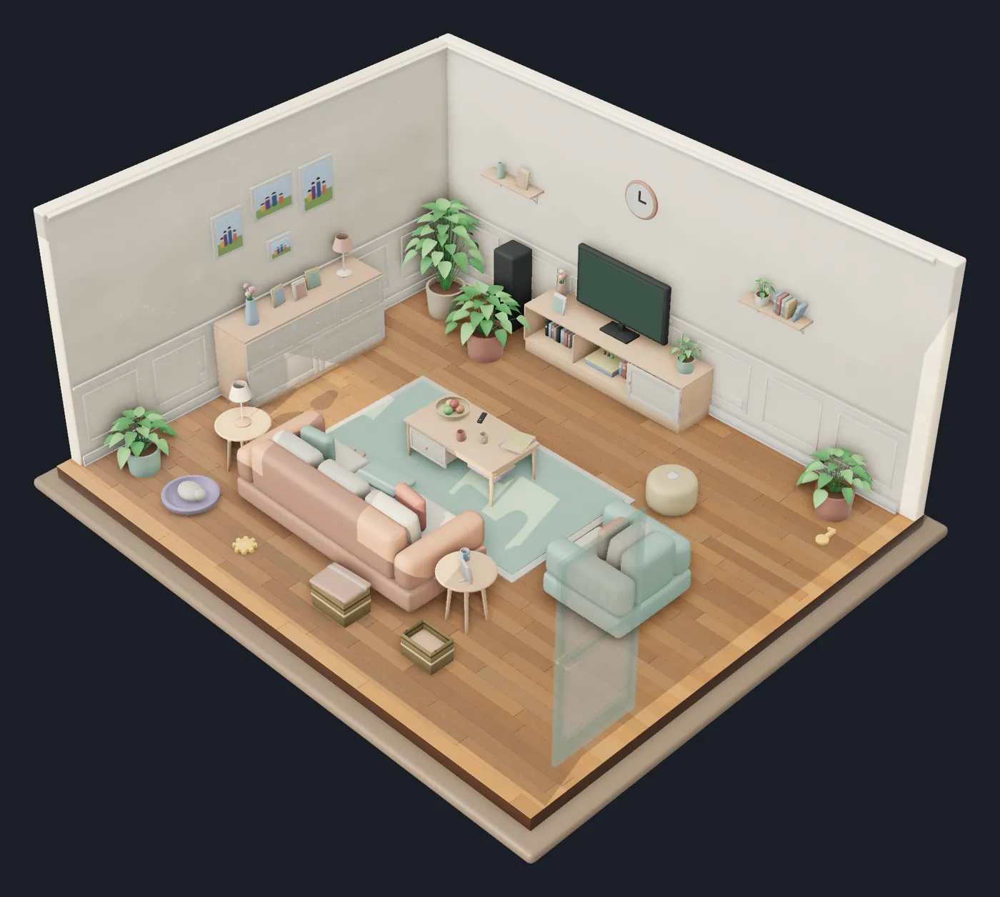
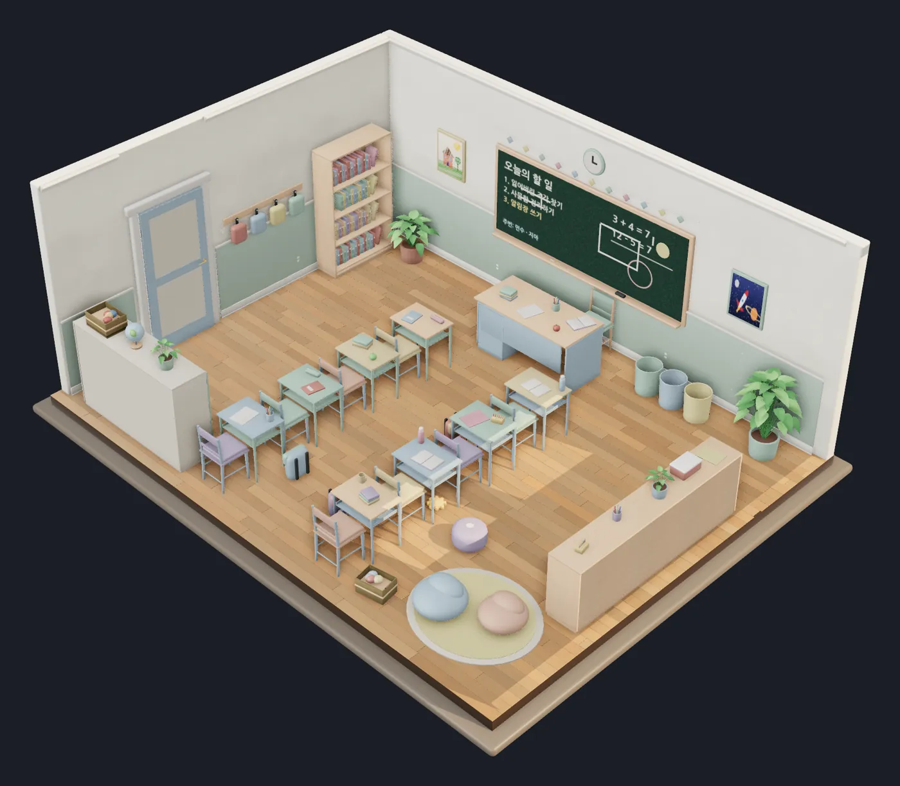
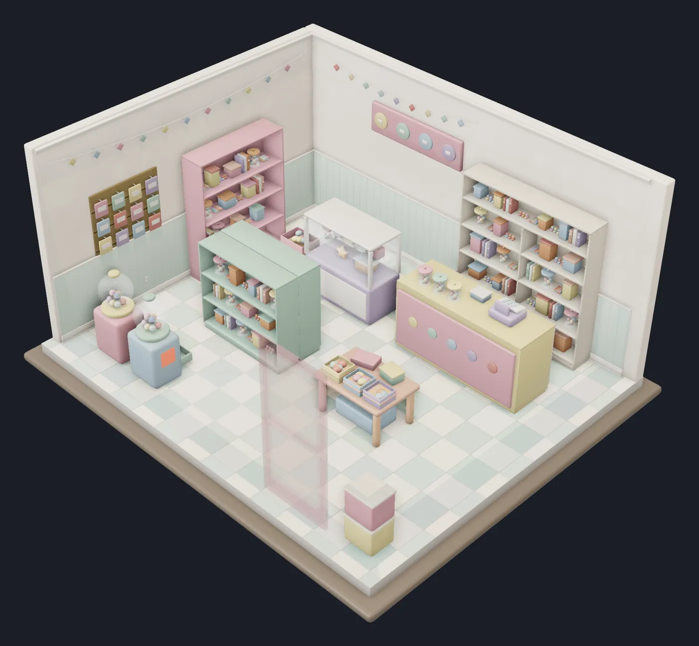
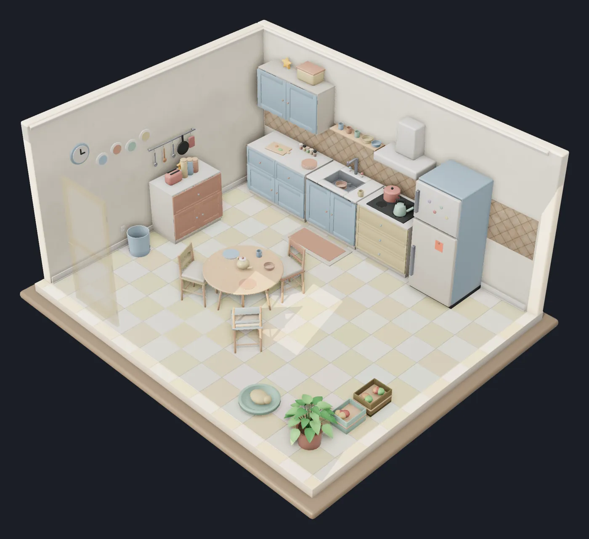

게임 · 2026 · 프로토타입
잃어버린 조각 — 3D 방탈출
미니어처 디오라마처럼 생긴 방을 손으로 돌려 보듯 살피며, 방마다 숨겨진 조각 3개를 찾아 문을 여는 웹 방탈출 게임. 설치 없이 브라우저에서 바로 플레이할 수 있다(PC·모바일).
Rooms

01 · 남자아이의 방

02 · 거실

03 · 학교 교실

04 · 문방구

05 · 부엌
Main Features
- 방 5개(남자아이의 방 → 거실 → 학교 교실 → 문방구 → 부엌)를 차례로 탈출하면 엔딩
- 방마다 조각 3개를 찾으면 출구 문이 열림 — 서랍·사물함을 열고, 뽑기 손잡이를 돌리고, 유리 진열장 미닫이를 열어야 나오는 조각도 있음
- 방을 드래그로 360° 돌리고 확대·축소하며 가구 뒤와 틈새를 살펴봄
- 소품을 집어 들고 다니거나 던질 수 있고, 클릭하면 크게 돌려 보는 상세 보기, 일부 장난감은 직접 움직여 볼 수 있음
- 창으로 드는 햇빛, 가구 아래 그늘, 인형 털까지 표현한 사실적인 실시간 렌더
- 왼쪽 위 번호로 어느 방이든 바로 이동 가능, 모바일은 두 손가락으로 확대·이동
Known Issues · Next Steps
- 프로토타입 단계 — 조각 찾기 외의 퍼즐과 이야기 연출은 아직 적음
- 사실적인 렌더라 저사양 기기에서는 느릴 수 있음
Stack & Role
Three.js · TypeScript · Vite · Blender · GitHub Pages
게임 기획레벨·퍼즐 설계3D 공간 연출
개인 프로젝트 · 기획 및 코드 구현 · Claude Code 협업 · 소스 저장소는 비공개